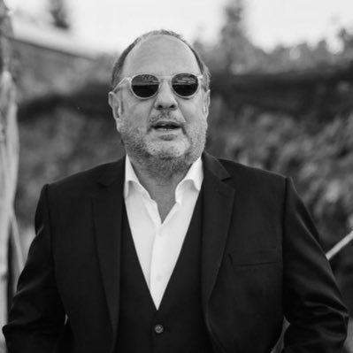
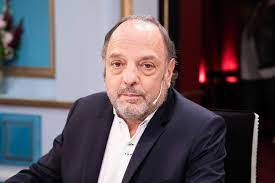
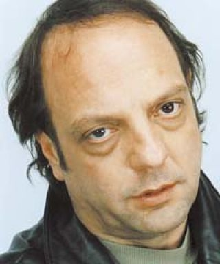

La vida de Baby
Ángel Pedro Etchecopar (San Fernando, 16 de febrero de 1953), popularmente conocido como “Baby”, es un actor y periodista argentino que trabaja actualmente en la Radio Rivadavia y el canal de televisión A24.
.jpg)
Nacido en el seno de una familia de clase media-baja, Etchecopar tuvo un hermano mellizo que falleció al nacer y otro hermano más joven, Juan Carlos, que perdió la vida como consecuencias de su experiencia en la Guerra de Malvinas en 1982. Vivió una infancia que el siempre calificó como muy difícil en San Isidro. Su padre era el dueño de una imprenta y su madre era ama de casa, siendo muy cercano al partido de la Unión Cívica Radical desde sus primeros años de vida. Su padre llegó a ejercer el cargo de secretario del presidente Arturo Illia y sus abuelos eran cercanos a Hipólito Yrigoyen, teniendo desde pequeño contacto con los grandes referentes del partido y sus ideas, que muchos años más tarde le influirían en su carrera periodística.
Su educación discurrió entre escuelas públicas y privadas, llegando a repetir hasta tres veces el primer año. Ávido lector gracias a su padre, siempre encontró aburrida la formación que recibió durante sus años de primaria y secundaria, lo cual también le influiría mucho en su formación artística a través del tiempo. Una vez que terminó el secundario, Etchecopar debió realizar el servicio militar, adonde tampoco pudo vivir una experiencia formidable. “Una cosa es la instrucción militar y otra es la humillación del hombre”, destacó en 2022 ante el diario La Nación. Terminada la conscripción, Etchecopar decidió estudiar junto a sus amigos la carrera de medicina en la Universidad del Salvador, la cual siguió durante algún tiempo hasta que entendió que era demasiado difícil para él. Una vez abandonada aquella carrera, incursionó en el rubro textil, teniendo un notable éxito y 11 locales de ropa abiertos en simultáneo. Fue en aquellos años que conoció a la que sería su primera esposa, Adriana Paz, de quien se enamoró en su primera cita y con quién también llegó a tener tres hijos: María Paz, Federico y Leandro. Ambos se casaron en 1986 y mantuvieron su matrimonio por casi 30 años, cuando en febrero de 2016 Adriana fallece como fruto de un cáncer de colon con el cual venía batallando hacía un largo tiempo.
En 2012, Etchecopar sufrió un hecho de violencia que lo llevó a defender su familia. En marzo de aquel año, se enfrentó a los tiros con tres delincuentes armados que entraron a su casa de San Isidro para robar y uno de ellos intentó abusar de su hija, que en ese momento estaba embarazada. Según las pericias, hubo 37 disparos: 25 fueron de los ladrones y 12 de Etchecopar. Uno de los delincuentes murió y otro resultó herido. Baby y su hijo sufrieron lesiones por las que debieron ser internados. Finalmente, la Justicia resolvió que actuó en legítima defensa. Tras el fallecimiento de su esposa Adriana, en 2018 Etchecopar comenzó una relación con Silvina Cupeiro, la hija del célebre Piloto de Carreras Jorge Cupeiro. Etchecopar y Cuperiro contrajeron matrimonio en diciembre de 2023.